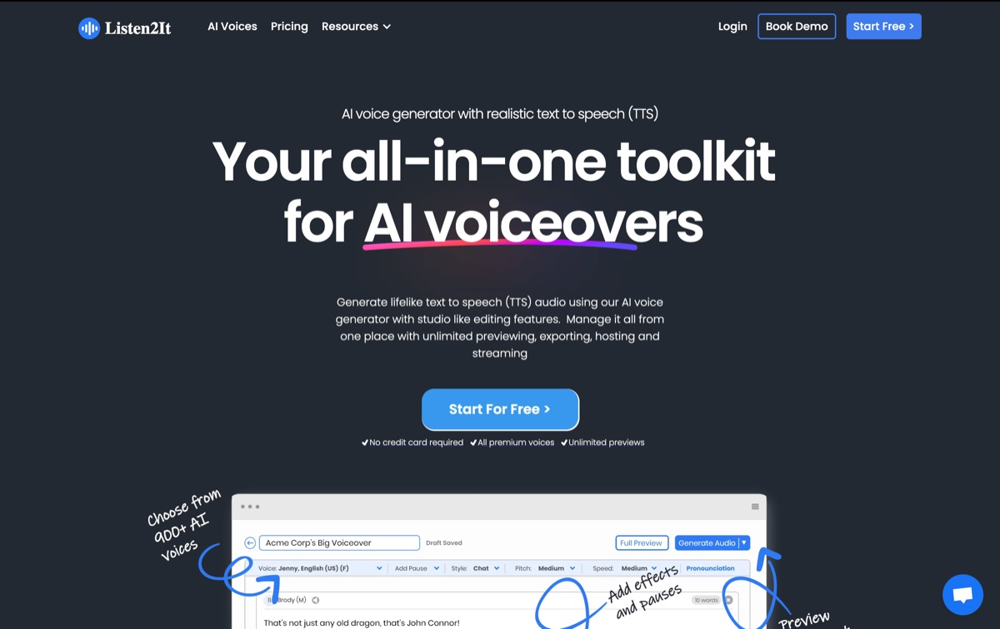

01The challenge
Listen2it generates lifelike text-to-speech audio with studio-grade editing — previewing, exporting, hosting and streaming, all in one place. Its users range from podcasters and publishers to developers wiring up the API.
That range was the problem. A pro audio tool and a one-click article-to-audio converter usually need opposite interfaces. The platform needed both, without splitting into two products — and it had to stay usable while supporting 1,400+ voices across 84 base languages, voice cloning and custom pronunciation.
02My role
- Complete platform UI — every user workflow from project creation to audio export, designed end to end.
- Information architecture — the main dashboard organized into Projects, Audio Articles, Analytics, Integration and Audio Player management.
- Editing workspace — timeline controls, multi-track audio management and real-time preview with professional-grade tools.
- Voice selection UX — a searchable library across 84 base languages with gender & style filtering, plus voice cloning flows.
- Supporting systems — analytics dashboard, export management with folder structure, sharing, and a custom pronunciation manager.
- Website & page system (2025–26) — rebuilt the marketing site end to end: homepage, pricing and every feature page, plus use-case landing pages for presentation voiceover, video voiceover and audiobook narration.
- Templates at scale — one language-page template that holds up across roughly 155 SEO pages, with components drawn to migrate cleanly into Strapi as the site moved off Webflow.
- Release QA — structured testing passes on staging after the redesign, covering generation, composer, cloning and export paths, and the reusable test prompts behind them.
03Process & key decisions
Two speeds, one interface. I designed the workspace in layers: a "fast path" where pasting text and picking a voice produces audio in three clicks, and a "deep path" where the timeline, multi-track controls and pronunciation tuning unfold for power users. The fast path is the default; depth is opt-in.
Voice selection as the hero moment. Choosing a voice is the product's emotional core, so it got the most design attention: instant previews, language and style filters, and side-by-side comparison — closer to picking a cast member than configuring a setting.
A site that splits its personality on purpose. The homepage is bold and saturated; every inner page is quiet and minimal. That split is deliberate — the homepage has to make a claim, the feature pages have to get out of the way of the product. Holding the line took a documented system rather than taste, so the team can extend it without me.
Shadow DOM over iframes for the embed player. Comparing BotTalk, BeyondWords, Trinity Audio and ElevenLabs Audio Native, the iframe approach kept breaking publisher styling. I argued for a Web Component with Shadow DOM instead, so a publisher's player inherits their type and color without leaking scope in either direction.
Pronunciation as a first-class feature. Specialized terms break TTS immersion instantly. The custom pronunciation manager lets users fix a word once and have it apply everywhere — a small interface with outsized impact on perceived quality.

04Outcome
The platform now serves wildly different users — podcasters, publishers, marketers and developers — through one coherent interface. This is my current full-time focus, and the design system built here powers the company's wider product family.